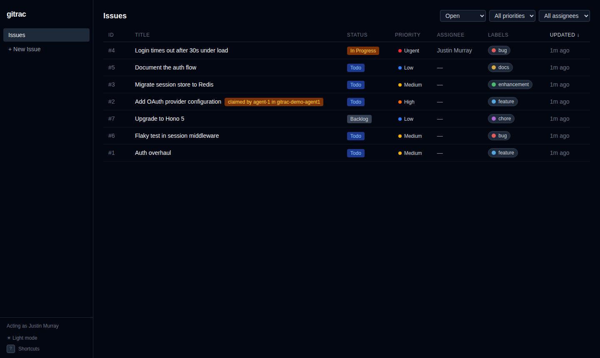
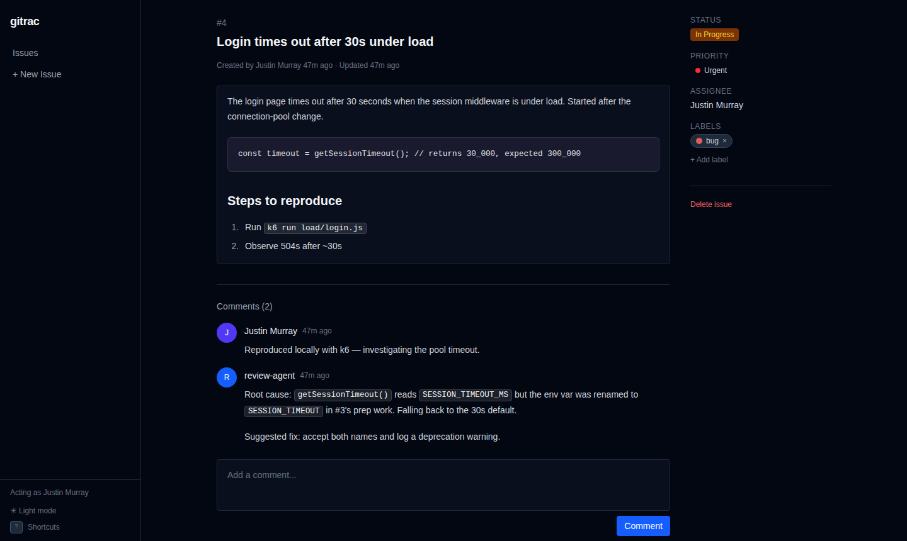

Issue tracking that lives in your git repo.
gitrac keeps issues as markdown files in .issues/, committed next to the code
they describe. Work with them from the command line, a local web UI, or your coding agents.
There is no server to run and no account to create.
curl -fsSL https://get.gitrac.dev | bash
Or npm install -g @gitrac/cli. Linux and macOS (Apple Silicon). Open source, MIT.

Your issues belong with your code
Most trackers keep issues in a hosted database beside the repository. That works, but the
issues get their own history, their own permissions and their own search. The only link
between a fix and its issue is a line like Fixes #123
in a commit message.
gitrac makes the issue part of the change. The commit that fixes a bug also closes its issue. A branch carries its issues with it. A pull request shows the issue changes in the same diff as the code.
An issue is a markdown file
- Metadata is YAML frontmatter. The description and comments are plain markdown.
- Anyone, or any tool, that can read markdown can read your backlog. gitrac does not have to be installed.
- History, blame, search and backups are the git tools you already use.
- You define the statuses, priorities and labels in
.issues/config.yaml.
---
id: 4
title: Login times out under load
status: in_progress
priority: urgent
assignee: justin@example.com
labels:
- bug
blockedBy:
- 2
created: '2026-03-28T12:00:00.000Z'
createdBy: Justin Murray
updated: '2026-03-28T14:30:00.000Z'
---
The login page times out after 30 seconds
when the session middleware is under load.
---
### Justin Murray — 2026-03-28T12:05:00.000Z
Reproduced locally with k6.Close it in the same commit that fixes it
Each gitrac command commits its own change, and that commit contains only the files gitrac touched. Anything else you have staged stays staged.
Add --no-commit to leave the issue change in your working tree. Then it goes
into your fix commit, and the history shows the code and the issue changing together.
$ gitrac create -t "Login times out" -p urgent -l bug
$ gitrac claim 1 # assign to you, set in_progress
# ... fix the bug ...
$ gitrac close 1 --no-commit -c "Accept both env var names."
$ git add -A
$ git commit -m "fix: login timeout (#1)"Built for coding agents
An agent does not need API tokens, an SDK or a rate limit to work with gitrac. It runs a CLI and reads files. gitrac also adds the coordination that you need when several agents work at the same time.
A work queue that knows dependencies
gitrac ready lists open, unblocked issues by priority.
gitrac next --claim picks the top one and claims it in one locked step.
Claims across worktrees
Give each agent its own worktree and branch. A claim in any of them, committed or not, is visible to all the others, so two agents do not take the same issue.
Output for programs
-o json on every command, errors as one JSON line on stderr, and stable
exit codes to branch on.
Recovery from stuck agents
gitrac ls --stale 2h finds claims with no recent activity.
unclaim releases them from any worktree.
$ gitrac claim 2
Error: Issue #2 is already claimed by agent-1 (in_progress) in worktree /work/agent-1 (branch agent-1). Use --force to take it over.
$ echo $?
3A skill file teaches agents the workflow: claim, implement, close in the same commit. gitrac's own backlog was worked through this way.
Git does the rest
Issue-aware merges
A merge driver for .issues/ merges frontmatter field by field and keeps
comments from both sides. Only overlapping edits to a description need a manual fix.
Issues follow branches
Close an issue on a feature branch, and it closes on main when the branch
merges. Until then, other worktrees see it as closed on that branch.
Simple IDs
IDs are small integers. A new ID skips every ID in use in other worktrees and on local or fetched branches.
Safe in parallel
All changes, from the CLI or the web UI, run under one lock that all worktrees of the repo share.
A local web UI when you want one
Run gitrac to open a Linear-style interface at
localhost:3000. It has filters, keyboard shortcuts, markdown editing with
autosave, and pasted images that are committed with the issue.
Changes from the CLI, an agent or a git pull show up live. The web UI and
the CLI use the same files and the same rules.

How it compares
| Hosted trackersGitHub Issues, Jira, Linear | gitrac | |
|---|---|---|
| Where issues live | The vendor's database | Markdown files in your repo |
| Fix and issue | Linked by a Fixes #123reference | Changed by the same commit |
| Branches | One shared state for all branches | Issues branch and merge with the code |
| Review | In a separate UI | In the pull request diff |
| Agent access | API tokens and SDKs | A CLI with JSON output, or the files |
| Parallel agents | Coordination is up to you | Exclusive claims across worktrees |
When gitrac is not the right fit
gitrac is for the people and agents who work in the repository. It has no accounts, permissions or notifications, and the web UI runs on your machine with no authentication. If customers or other people outside the repo must file and follow issues, or you need boards, planning across repos or reports, use a hosted tracker.
Get started
gitrac is one self-contained binary with the web UI built in. It needs only
git.
The README has the full CLI reference, configuration and a guide to running agents in parallel.
$ cd your-project
$ gitrac init # create .issues/ and commit it
$ gitrac create -t "My first issue"
$ gitrac ls
$ gitrac # web UI at http://localhost:3000